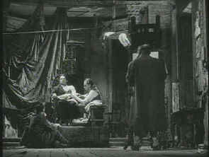

| Odd Man
Out/B+,B |
| Image/1947/116/BW
1.33 |
Odd Man Out has a
nightmare like existence. On the surface, it’s a straightforward IRA story. Fresh out of prison,
IRA captain Johnny McQueen plans to lead a payroll heist of a Belfast mill. There is dissention
concerning Johnny’s physical stamina and his ability to lead the job, but he carries on.
Everything seems to go well enough, but a disoriented Johnny stumbles on the steps, cramping the
getaway. The driver of the getaway car panics and in the confusion Johnny is left wounded in the
middle of the road. Stumbling to a hiding place, the delirious Johnny desperately tries to avoid
capture by the police.
 |
|
Lukey paints a semi-conscious Johnny. ©Janus |
While a police manhunt blankets the Belfast streets, Kathleen, who
loves Johnny, tries to find his whereabouts so that she can smuggle him out of the city. The police
threaten her with accountability if she does not cooperate in Johnny’s capture. Meanwhile, Johnny’s
confederates foolishly talk about the robbery and all the while the police net tightens around the
city. Abandoned by a horse cabby, Johnny is spotted by a derelict and then coveted by a drunken
artist who wants to capture the countenance of death on canvas.
Carol Reed paints this story of a bungled IRA bank job in the shadows of
night, high key lights illuminating the players in dramatic compositions. The stylized photography
creates a nightmare canvas for Johnny to traverse. The haunting William Allyn score follows every
move of the characters, signaling an inevitable march to reality.
James Mason wanders through the role of Johnny with a magnificent sense of
pre-ordination. It’s a role that must be constantly underplayed and it is certainly amongst the
best work Mason has ever done. Robert Newton has some amazing moments as the rogue artist Lukey.
The black and white images are effectively pumped by dramatic use of
contrast. There are a few passages when black clothing seems slightly crushed and loses detail, but
this could well be due to the high key style of shooting that Reed chose. Dirt and scratches are
intermittent, but seldom alter the magnificent visual impact of the stark imagery. This is a highly
detailed DVD transfer with an overall lustrous look. The is clean without apparent hiss and the
Alwyn score, while slightly pinched in range, is still utterly beautiful.
|
|
|
|

Selections from the feature archive include articles on Akira Kurosawa,
Frank Darabont, Blonde Bimbos, Hollywood
Street Gangs, or Vietnam:
The Hollywood Pariah, and many more....
Sturges Emerges
Preston Sturges was Hollywood's resident comic genius for more than a decade. His movies are
timeless. Click on his image to read all about it.

 Gary Morris's insightful publication Bright Lights
Film Journal turns the celluloid in films from a unique perspective. Click on the image above
for more pure movie views. Gary Morris's insightful publication Bright Lights
Film Journal turns the celluloid in films from a unique perspective. Click on the image above
for more pure movie views.

Click on the link to visit the judge's chambers.
Imaging Science Foundation
The Imaging Science Foundation promotes proper standards in home theater viewing. ISF trained
technicians offer monitor calibration services to consumers. The difference in a properly
calibrated monitor can be astounding. Click on the image to find an ISF member near you.

Information on film sound in theaters and home theaters. Lots of helpful information provided in a
handsome interface.
|